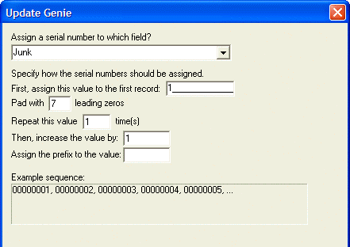
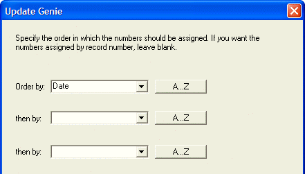

Adding an Auto-Increment ID Field to a Table
If you have existing table that needs a field with a unique ID number, you can create add it with an Update Operation:
Select the Tables/Sets tab of the Control Panel.
Right click the table name.
Select Edit Structure... from the right click menu to add the new field. (It should be a character field. Even if all it contains are numerals, it should not be a number field unless you plan to do math with it.) Make sure the field will be long enough to hold all the possible records. Add more character positions in case you later decide to add a prefix. Do not make this an auto-increment field yet.
Save the structure change.
Right the table name and select Create Operation....
Select Update Records and click Update Genie.
Select the Character tab and click Assign Serial Values.
Define the initial value, the number of characters to display, the increment, and optionally, a prefix.

Define how to order the records in the table before writing the new field values.

Specify which records to update (presumably all records).
Run the update operation.
After running the update, click the table name and select Edit Field Rules....
Set the Field Types tab and set the ID field to Auto-Increment.
All future entries will be handled automatically.